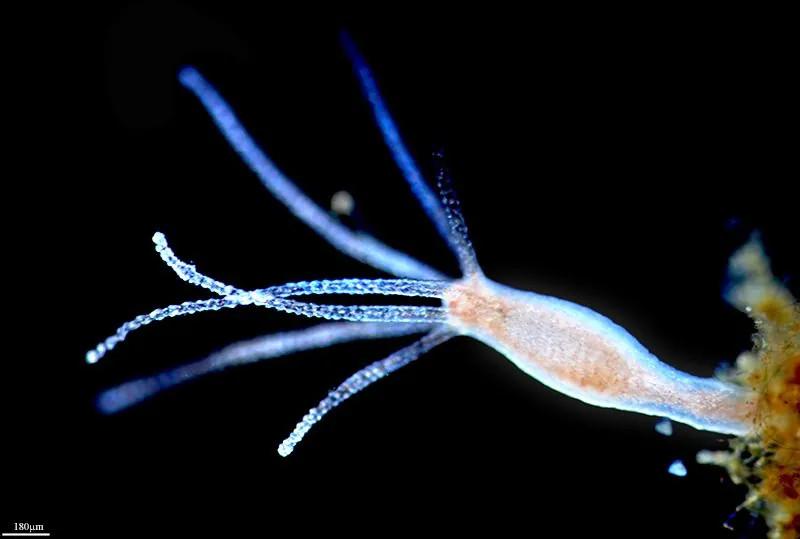

其他无脊椎动物 · 动物界
水螅 Hydra vulgaris

生活在淡水中的小型刺胞动物，身体呈管状，有触手和刺细胞，再生能力极强，是生物学研究的经典材料。
- 分类
- 门刺胞动物门纲水螅纲目花水母目科水螅科属水螅属
- 栖息环境
- 池塘、湖泊和缓流淡水水体，附着在水草和石块上
- 地理分布
- 全球淡水水体，中国各地池塘湖泊常见
- 保护级别
- 暂无评估
物种志
水螅的身体呈细长的管状，长约 0.5–1.5 cm，基部有基盘附着在水草或石块上，另一端是口，口周围有一圈细长的触手，触手上密布刺细胞。体色多为淡绿、淡褐或灰白色，身体可以伸缩和弯曲。
它生活在池塘、湖泊和缓流的淡水水体中，附着在水草、石块和水生植物上，用触手捕捉水蚤、小型甲壳动物和昆虫幼虫，刺细胞释放毒素麻痹猎物后送入口中。水螅的再生能力极强，身体被切碎后每段都能重新长成完整个体，因此是研究再生和身体极性形成的经典实验动物。它通常通过出芽进行无性繁殖，在环境不良时也会进行有性繁殖。水螅对水质变化较敏感，可作为淡水水质监测的指示生物。
形态与习性
- 食性用触手捕捉水蚤等小型水生动物
- 体长约 0.5–1.5 cm
- 形态身体管状，口周围有一圈带刺细胞的触手
- 再生被切碎后每段都能长成完整个体
- 繁殖通常出芽无性繁殖，环境不良时有性繁殖
- 科研再生和身体极性研究的经典实验动物
趣味知识
- 水螅的身体被切碎后，每一段都能长成一条完整的水螅。
- 它口周围的触手上布满刺细胞，能麻痹水蚤等小猎物。
- 水螅常用出芽的方式繁殖，身体侧面会长出小水螅。